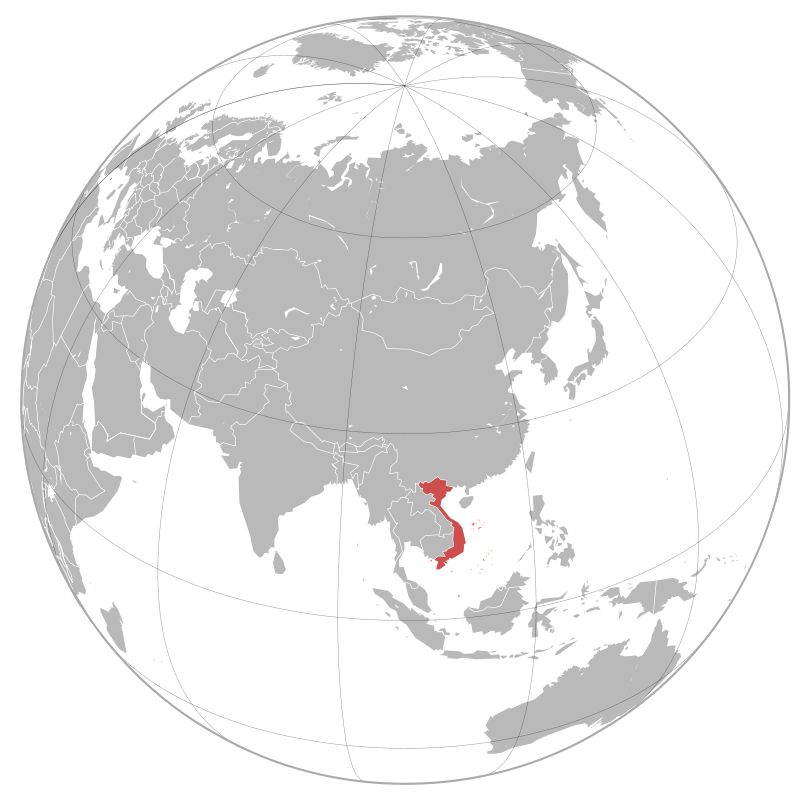

Việt Nam, tên chính thức: Cộng hòa Xã hội chủ Nghĩa Việt Nam, là một quốc gia nằm ở phía đông bán đảo Đông Dương, thuộc khu vực Đông Nam Á. Việt Nam phía bắc giáp Trung Quốc, phía tây giáp Lào và Campuchia, phía tây nam giáp vịnh Thái Lan, phía đông và phía nam giáp biển Đông và có hơn 4.000 hòn đảo, bãi đá ngầm lớn nhỏ, gần và xa bờ, có vùng nội thủy, lãnh hải, vùng đặc quyền kinh tế và thềm lục địa được Chính phủ Việt Nam xác định gần gấp ba lần diện tích đất liền (khoảng trên 1 triệu km²). Trên biển Đông có quần đảo Trường Sa và Hoàng Sa được Việt Nam tuyên bố chủ quyền nhưng vẫn đang bị tranh chấp với các quốc gia khác như Đài Loan, Trung Quốc, Malaysia và Philippines.
Sau khi Việt Nam Dân chủ Cộng hòa ở miền Bắc và Mặt trận dân tộc giải phóng miền nam Việt Nam giành chiến thắng trước Việt Nam Cộng hòa ở miền Nam ngày 30 tháng 4 năm 1975, hai miền Bắc-Nam được thống nhất. Ngày 2 tháng 7 năm 1976 nước Việt Nam được đặt Quốc hiệu là Cộng hòa Xã hội chủ nghĩa Việt Nam.
Vào năm 1986, Việt Nam tiến hành một số cải cách về kinh tế (gọi là đổi mới), mở cửa cho nền kinh tế Việt Nam hòa nhập với quốc tế. Việt Nam đã thiết lập mối quan hệ ngoại giao với 178 quốc gia, quan hệ kinh tế - thương mại - đầu tư với trên 224 quốc gia và vùng lãnh thổ, là thành viên Liên Hợp Quốc, ASEAN, ASEM, APEC, WTO, Tổ chức quốc tế Pháp ngữ, Phong trào không liên kết và nhiều tổ chức quốc tế, khu vực khác...
Kể từ năm 2000 Việt Nam là một trong những nước có mức tăng trưởng kinh tế nhanh nhất thế giới, và theo Citigroup, mức tăng trưởng cao này sẽ còn tiếp tục phát triển. Theo BBC, năm 2004, Việt Nam đứng thứ 11 trong các nền kinh tế tăng trưởng nhanh nhất trên thế giới. Tuy nhiên, tốc độ tăng trưởng chậm lại trong một số năm sau, năm 2013 tăng trưởng 5,42%, xếp thứ 6 trong 11 nước khu vực Đông Nam Á. Việc đổi mới kinh tế thành công đã dẫn đường cho Việt Nam trở thành thành viên của Tổ chức Thương mại Thế giới vào năm 2007.
Tuy nhiên, Việt Nam vẫn còn gặp phải nhiều vấn đề như tỷ lệ lạm phát cao, bất bình đẳng về thu nhập cao, dịch vụ chăm sóc sức khỏe kém và tình trạng bất bình đẳng giới tính còn nhiều.
Việt Nam nằm trong bán đảo Đông Dương, thuộc vùng đông nam châu Á. Lãnh thổ Việt Nam chạy dọc bờ biển phía đông của bán đảo này. Việt Nam có biên giới đất liền với Trung Quốc (1.281 km), Lào (2.130 km) và Campuchia (1.228 km) và bờ biển dài 3.444 km tiếp giáp với vịnh Bắc Bộ, biển Đông và vịnh Thái Lan.
Việt Nam có diện tích 331.698 km², bao gồm khoảng 327.480 km² đất liền và hơn 4.500 km² biển nội thủy, với hơn 2.800 hòn đảo, bãi đá ngầm lớn nhỏ, gần và xa bờ, bao gồm cả Trường Sa và Hoàng Sa mà Việt Nam tuyên bố chủ quyền, có vùng nội thủy, lãnh hải, vùng đặc quyền kinh tế và thềm lục địa được Chính phủ Việt Nam xác định gần gấp ba lần diện tích đất liền khoảng trên 1 triệu km².
Địa hình Việt Nam rất đa dạng theo các vùng tự nhiên như vùng tây bắc, đông bắc, Tây Nguyên có những đồi và những núi đầy rừng, trong khi đất phẳng che phủ khoảng ít hơn 20%. Núi rừng chiếm độ 40%, đồi 40%, và độ che phủ khoảng 75%. Các vùng đồng bằng như đồng bằng sông Hồng, đồng bằng sông Cửu Long và các vùng duyên hải ven biển như Bắc Trung Bộ và Nam Trung Bộ. Nhìn tổng thể Việt Nam gồm ba miền với miền Bắc có cao nguyên và vùng châu thổ sông Hồng, miền Trung là phần đất thấp ven biển, những cao nguyên theo dãy Trường Sơn, và miền Nam là vùng châu thổ Cửu Long. Điểm cao nhất Việt Nam là 3.143 mét, tại đỉnh Phan Xi Păng, thuộc dãy núi Hoàng Liên Sơn. Diện tích đất canh tác chiếm 17% tổng diện tích đất Việt Nam.
Việt Nam có khí hậu nhiệt đới xavan ở miền Nam với hai mùa (mùa mưa, từ giữa tháng 5 đến giữa tháng 9, và mùa khô, từ giữa tháng 10 đến giữa tháng 4) và khí hậu cận nhiệt đới ẩm ở miền Bắc với bốn mùa rõ rệt (mùa xuân, mùa hè, mùa thu và mùa đông), còn miền trung có đặc điểm của khí hậu nhiệt đới gió mùa. Do nằm dọc theo bờ biển, khí hậu Việt Nam được điều hòa một phần bởi các dòng biển và mang nhiều yếu tố khí hậu biển. Độ ẩm tương đối trung bình là 84% suốt năm. Hằng năm, lượng mưa từ 1.200 đến 3.000 mm,số giờ nắng khoảng 1.500 đến 3.000 giờ/năm và nhiệt độ từ 5 °C đến 37 °C. Hàng năm, Việt Nam luôn phải phòng chống bão và lụt lội với 5 đến 10 cơn bão/năm.
Về tài nguyên đất, Việt Nam có rừng tự nhiên và nhiều mỏ khoáng sản trên đất liền với phốt phát, than đá, măng gan, bô xít, chrômát,... Về tài nguyên biển có dầu mỏ, khí tự nhiên, quặng khoáng sản ngoài khơi. Với hệ thống sông dốc đổ từ các cao nguyên phía tây, Việt Nam có nhiều tiềm năng về phát triển thủy điện.